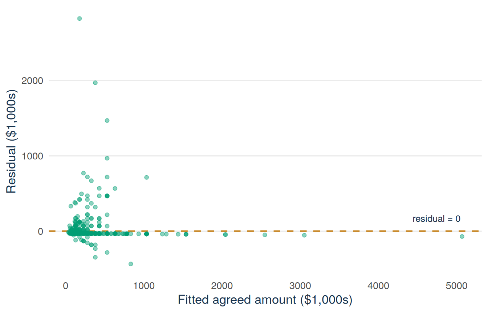
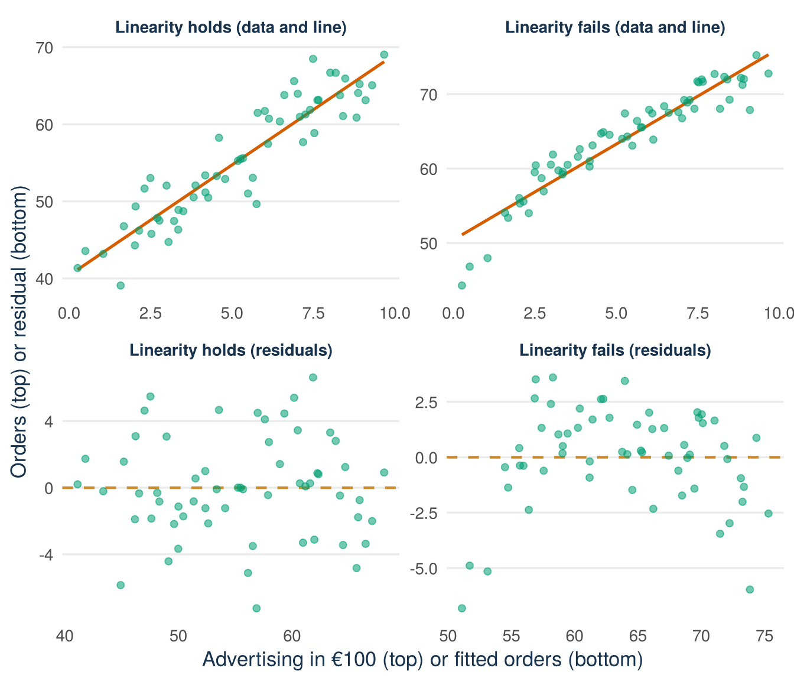
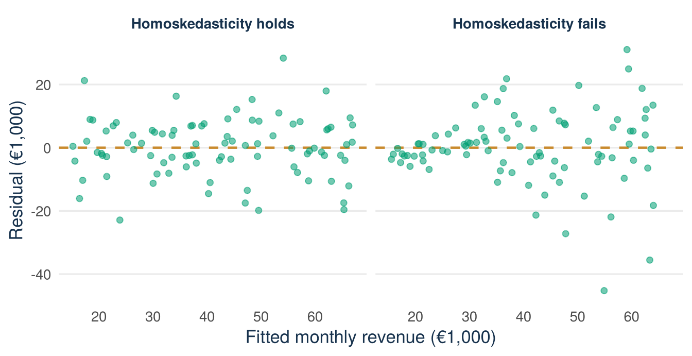
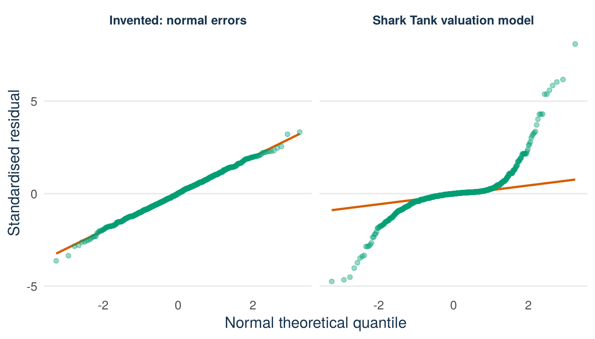
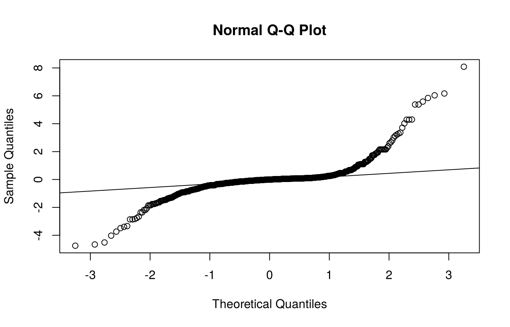
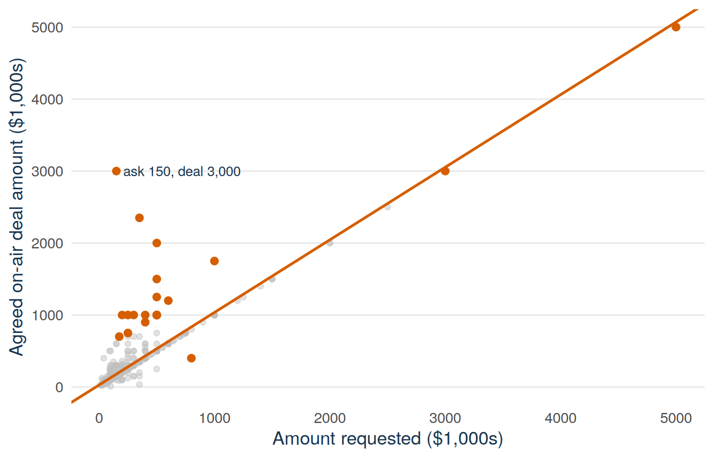
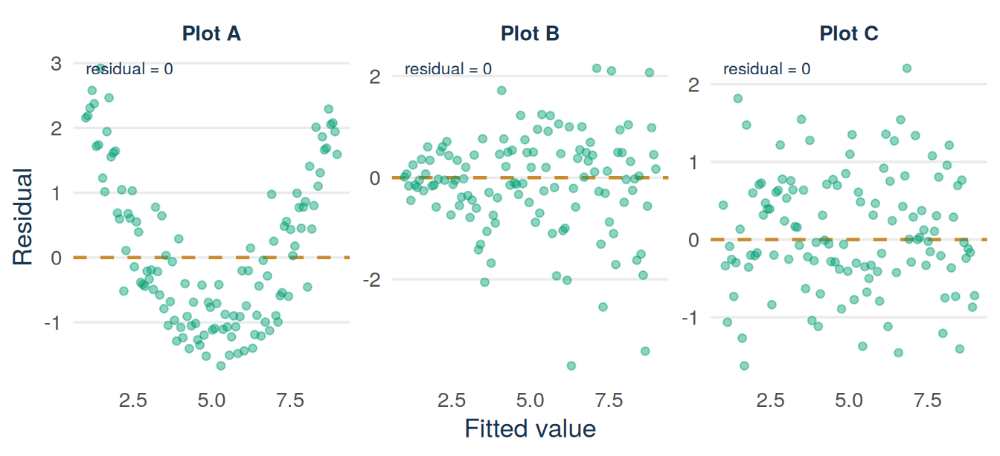
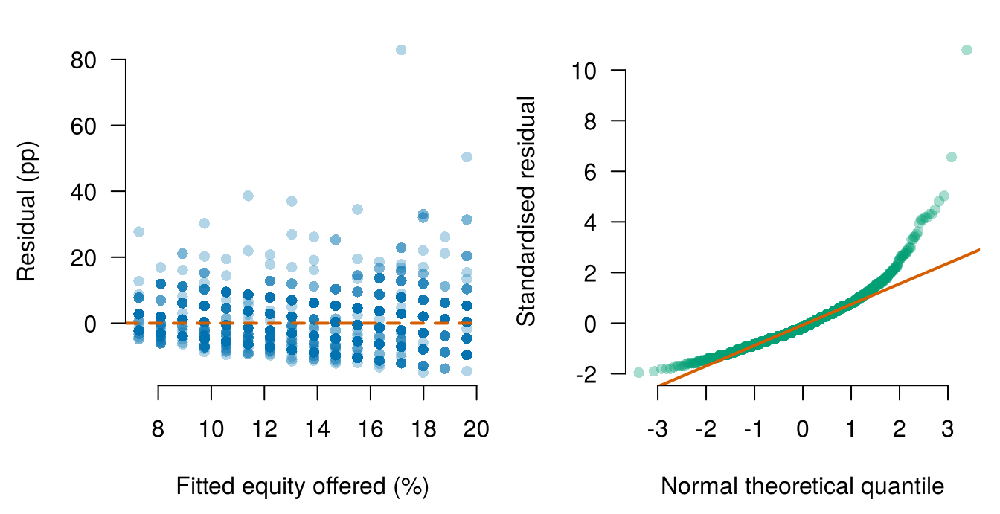

sharks <- read.csv("data/shark_tank_teaching.csv", stringsAsFactors = FALSE)
vals <- subset(sharks, deal_on_show == 1 & deal_equity_pct > 0)
vals$claimed_m <- vals$requested_valuation_usd / 1e6
vals$agreed_m <- vals$deal_valuation_usd / 1e6
val_model <- lm(agreed_m ~ claimed_m, data = vals)
plot(fitted(val_model), residuals(val_model))
abline(h = 0, lty = 2)Lecture 2: What the model assumes and how residuals reveal it
By the end of Lecture 2, you can
- explain what the main assumptions of a regression are needed for,
- check the main assumptions of a regression with residual plots,
- say which assumptions need knowledge of the data rather than plots,
- find outliers and influential observations, and check with a sensitivity analysis how much they change the results.
Driving question
R will always give you a regression line, also when the line is misleading. One unusual deal, a curved pattern, or a hidden factor can change your conclusion. Before you base a decision on a fitted line, you check what the model assumes and whether these assumptions are plausible.
The fitted line from Lecture 1 looks convincing. Under what conditions should we trust it, and what do its residuals reveal?
Before class
Do all the preparation below before class.
Video preparation
Watch these two parts of Brandon Foltz’s Statistics 101 series before class. Then do the R warm-up below.
- Linear Regression, Residual Analysis, from 10:10 to the end. Focus on the assumptions and on which residual pattern challenges which assumption.
- Linear Regression, Outliers and Influential Observations, from 4:28 to the end. Focus on the difference between an outlier and an influential observation.
Where these videos differ from this book
- Foltz shows output from other software, not R.
- He writes \(b_0\) and \(b_1\) for the fitted intercept and slope. This book writes \(\hat\beta_0\) and \(\hat\beta_1\).
The videos explain key ideas in another way. The lecture material and its notation always come first.
R warm-up. Rebuild the Lecture 1 model, the regression of the agreed valuation on the claimed valuation (both in $ millions) for the 874 deals for a share of the company. Make its residual-versus-fitted plot: the fitted values on the horizontal axis and the residuals on the vertical axis. Bring the plot to class:
Code along (bring your laptop). Bring a charged laptop with RStudio and the course project open, so that you can run the code of this chapter yourself during the lecture and get the same numbers and figures.
Check the videos and the warm-up. Answer these three quick questions before you open the answers.
- In a residual-versus-fitted plot, which pattern challenges linearity, and which pattern challenges constant variance?
- What is the difference between an outlier and an influential observation?
- In your warm-up plot, how does the vertical spread of the residuals change from small to large fitted values?
Check your preparation
- A curve in the residuals, for example below zero at both ends and above zero in the middle, challenges linearity. A spread that grows or shrinks from left to right, like a funnel, challenges constant variance.
- An outlier has an unusually large residual: its outcome lies far from the fitted line. An influential observation changes the fitted line noticeably when you remove it. An outlier is not always influential, and an influential observation does not always have a large residual.
- At small fitted values the residuals stay close to zero. At large fitted values they spread over several million dollars, like a funnel. The lecture material explains what this pattern means.
Predict. Answer this question before you come to class. The agreed valuations are strongly right-skewed (most are small and a few are very large), far from a normal distribution. Does that alone make the Lecture 1 regression of the agreed valuation on the claimed valuation invalid, yes or no? Choose one answer and write one sentence explaining why. You find the answer at the end of “What each assumption supports” in the lecture material.
Lecture material
This section states what the regression model assumes and what each assumption is needed for. It then goes through the assumptions one at a time. For three of them you learn to read a plot of the residuals, and for the other two you learn which questions about the data to ask instead. The last part looks at single deals that move the line, and at how to check how much the results depend on them.
Start with a founder’s question
Lecture 1 gave you a number: each extra dollar of claimed valuation goes with about 65 cents more agreed valuation, on average. Before you plan a negotiation around this number, ask whether you can trust the line behind it. R draws a line through any data, also through data that a straight line describes badly, and it gives no warning.
In QM Basic Lecture 1 you saw that a few very large offers pull the mean up, while the median stays put. A fitted line is a line of averages, so a few very large deals can pull it in the same way. This lecture first lists what the model assumes. It then checks each assumption in turn, mostly with plots of the residuals, and ends with a search for the few deals that move the line most. Lecture 3 then builds on this check when it measures how precise the slope is.
The residual plot from the warm-up
The code below is the warm-up code. It rebuilds the data and the model of Lecture 1: the valuation agreed on air (agreed_m) regressed on the valuation claimed by the founder (claimed_m), both in $ millions, for the 874 Shark Tank deals for a share of the company. It only builds objects and prints nothing. The figure below then plots the residuals of this model against its fitted values.
sharks <- read.csv("data/shark_tank_teaching.csv", stringsAsFactors = FALSE)
vals <- subset(sharks, deal_on_show == 1 & deal_equity_pct > 0)
vals$claimed_m <- vals$requested_valuation_usd / 1e6
vals$agreed_m <- vals$deal_valuation_usd / 1e6
val_model <- lm(agreed_m ~ claimed_m, data = vals)See the R code for this figure
library(ggplot2)
sharks <- read.csv("data/shark_tank_teaching.csv", stringsAsFactors = FALSE)
vals <- subset(sharks, deal_on_show == 1 & deal_equity_pct > 0)
vals$claimed_m <- vals$requested_valuation_usd / 1e6
vals$agreed_m <- vals$deal_valuation_usd / 1e6
val_model <- lm(agreed_m ~ claimed_m, data = vals)
resid_df <- data.frame(
fitted = fitted(val_model),
residual = residuals(val_model)
)
ggplot(resid_df, aes(x = fitted, y = residual)) +
geom_hline(yintercept = 0, colour = "#C98B2E",
linetype = "dashed", linewidth = 0.8) +
geom_point(alpha = 0.45, size = 1.6, colour = "#009E73") +
annotate("text", x = 31.5, y = 0.9, label = "residual = 0",
hjust = 1, colour = "#17324D", size = 3.4) +
labs(x = "Fitted agreed valuation ($ millions)",
y = "Residual ($ millions)") +
theme_minimal(base_size = 13) +
theme(
panel.grid.minor = element_blank(),
panel.grid.major.x = element_blank(),
plot.caption = element_text(colour = "#5B6976"),
axis.title = element_text(colour = "#17324D")
)
Definition
Residual plot (residual-versus-fitted plot). A scatterplot with the fitted values \(\widehat Y_i\) on the horizontal axis and the residuals \(e_i\) on the vertical axis. It shows how the residuals change from the left to the right of the plot.
In Figure 2.1, both axes are in the units of the outcome, $1 million. A point above zero is a deal that was agreed at a higher valuation than its fitted value. A point below zero is a deal that was agreed at a lower valuation than its fitted value. To read patterns in this plot, you first need to know what the model assumes.
What each assumption supports
The model of Lecture 1 is
\[ Y_i=\beta_0+\beta_1X_i+\varepsilon_i. \]
Least squares gives a line for any data. Whether the numbers that come with the line are reliable depends on a few assumptions. A founder who plans with the 65 cents wants to know two things. Is the number right on average? And how far from the truth could it be? The two answers need different assumptions, so it helps to know which assumption supports which answer.
Definition
Model assumptions. Conditions on the data and on the error terms \(\varepsilon_i\) under which the estimates, standard errors, tests, and intervals of least squares are reliable.
The assumptions are about the error terms \(\varepsilon_i\) of the model. We do not have the error terms in the data, because they depend on the population line. The plots in this lecture therefore use the residuals \(e_i\), which are our estimates of the error terms (Lecture 1). The table lists each assumption and says what goes wrong if it fails. Its third column says how to check the assumption and what the check looks like when the assumption holds and when it fails. The first three rows can be checked with plots of the residuals. The last two follow from how the data were collected and produced.
| Assumption | What it says in plain words | How to check it | What goes wrong if it fails |
|---|---|---|---|
| Linearity | The average of \(Y\) at each value of \(X\) lies on a straight line: \(E[Y\mid X=x]=\beta_0+\beta_1x\) | Residual plot. Holds: the residuals scatter around zero in every part of the range of fitted values. Fails: the residuals follow a curve, for example below zero at both ends and above zero in the middle | One slope misses part of the pattern, and the line is wrong in some parts of the range |
| Homoskedasticity (constant variance) | The errors have the same variance at every value of \(X\): \(\operatorname{Var}(\varepsilon_i\mid X_i)=\sigma^2\) | Residual plot. Holds: the vertical spread of the residuals is about the same from left to right, an even band. Fails: the vertical spread grows or shrinks along the fitted values, like a funnel | The slope stays unbiased, but the usual standard errors, tests, and intervals are wrong |
| Normality of the errors | At each value of \(X\), the errors follow a normal distribution | Normal Q-Q plot of the standardised residuals. Holds: the points lie close to the straight reference line. Fails: the points bend away from the line, usually at one or both ends | In small samples the t and F distributions of Lecture 3 are no longer exact. In large samples this matters little |
| Independence (random sampling) | The observations are drawn independently: the error of one row says nothing about the error of another row | No plot. Check how the data were collected. Holds: each row was drawn separately, for example customers drawn at random from a long list. Fails: rows share something that affects the outcome, such as the same shop, week, or episode | The usual standard errors are often too small, so intervals are too narrow. A sample that is not random can also bias the line |
| Zero conditional mean (exogeneity): no omitted confounder | The error averages zero at every value of \(X\): \(E[\varepsilon_i\mid X_i]=0\). For a causal reading: no other cause of \(Y\) that is missing from the model is related to \(X\) | No plot. Check how the values of \(X\) came about. Holds: \(X\) is unrelated to other causes of \(Y\), for example because \(X\) was set at random. Fails: another cause of \(Y\) that is missing from the model is related to \(X\) | The slope is not the effect of changing \(X\). It still describes how average outcomes differ across values of \(X\) |
The rows support different conclusions. Linearity, independent observations, and zero conditional mean together make the estimated slope \(\hat\beta_1\) unbiased: across many samples, it is correct on average. Homoskedasticity and independence are needed for the usual standard errors, and so for the t-tests and intervals of Lecture 3. Normality of the errors makes these tests and intervals exact in small samples. In large samples they hold approximately without it, because of the central limit theorem.
No row of the table says that the data are normal. This answers the prediction question from before class: the outcome does not need to be normally distributed, and neither does the predictor. The agreed valuations are strongly right-skewed, and this skew alone does not break any assumption. The assumptions are about the average of \(Y\) at each \(X\), about the errors, and about how the data were produced. They are not about the histogram of \(Y\) or the histogram of \(X\).
Checking the assumptions one at a time
The table gives a short version of each check. This section goes through the five assumptions in the order of the table. For each of the first three you first see a clear invented example in which the assumption holds and one in which it fails. You then read the same kind of plot for the Shark Tank model. For independence and zero conditional mean you see why the residuals cannot show them, and which questions about the data you ask instead.
Linearity
Linearity does not say that individual outcomes lie on a line. It says that the average outcome at each value of the predictor follows a line. Think of a founder who regresses weekly orders on weekly advertising spending. If each extra €100 of advertising brings about the same number of extra orders at low and at high spending, the average follows a line. If extra advertising brings fewer and fewer extra orders, the average follows a curve that flattens out, and one straight line cannot describe it. Figure 2.2 shows both situations with invented data for 60 weeks. We chose the true average in each column, so we know whether linearity holds.
See the R code for this figure
library(ggplot2)
set.seed(802)
n_w <- 60
ad <- runif(n_w, 0, 10) # advertising, in €100
orders_lin <- 40 + 3 * ad + rnorm(n_w, 0, 3) # straight-line average
orders_cur <- 40 + 14 * log1p(ad) + rnorm(n_w, 0, 1.5) # average flattens
m_lin <- lm(orders_lin ~ ad)
m_cur <- lm(orders_cur ~ ad)
col_names <- c("Linearity holds", "Linearity fails")
data_df <- data.frame(
case = factor(rep(col_names, each = n_w), levels = col_names),
x = c(ad, ad), y = c(orders_lin, orders_cur),
fit = c(fitted(m_lin), fitted(m_cur)),
res = c(residuals(m_lin), residuals(m_cur))
)
plot_df <- data.frame(
case = rep(data_df$case, 2),
row = rep(c("Orders against advertising",
"Residuals against fitted values"), each = 2 * n_w),
x = c(data_df$x, data_df$fit),
y = c(data_df$y, data_df$res),
line = c(data_df$fit, rep(NA, 2 * n_w))
)
plot_df$panel <- factor(
paste(plot_df$case, ifelse(plot_df$row == "Orders against advertising",
"(data and line)", "(residuals)")),
levels = c("Linearity holds (data and line)", "Linearity fails (data and line)",
"Linearity holds (residuals)", "Linearity fails (residuals)"))
zero_df <- data.frame(
panel = factor(c("Linearity holds (residuals)", "Linearity fails (residuals)"),
levels = levels(plot_df$panel)),
yintercept = 0
)
ggplot(plot_df, aes(x = x, y = y)) +
geom_hline(data = zero_df, aes(yintercept = yintercept),
colour = "#C98B2E", linetype = "dashed", linewidth = 0.8) +
geom_line(data = subset(plot_df, !is.na(line)), aes(y = line),
colour = "#D55E00", linewidth = 0.9) +
geom_point(alpha = 0.55, size = 1.8, colour = "#009E73") +
facet_wrap(~ panel, scales = "free") +
labs(x = "Advertising in €100 (top) or fitted orders (bottom)",
y = "Orders (top) or residual (bottom)") +
theme_minimal(base_size = 13) +
theme(
panel.grid.minor = element_blank(),
panel.grid.major.x = element_blank(),
axis.title = element_text(colour = "#17324D"),
strip.text = element_text(colour = "#17324D", face = "bold")
)
Read the figure column by column. In the left column the orders scatter evenly around the straight line. Its residuals form a band around zero, with points above and below zero in every part of the plot. This is what a residual plot looks like when linearity holds. In the right column the gain from advertising flattens out at high spending. The straight line lies above the data at low and at high spending, and below the data in between. So the residuals are negative at both ends and positive in the middle, an arch. A curve like this in a residual plot, an arch or a U, shows that linearity fails. Here one constant slope understates the gain from advertising at low spending and overstates it at high spending. Lecture 6 shows how a curved term in the model captures such a pattern.
Now read Figure 2.1 for linearity. Ignore the spread for a moment and look at where the middle of the cloud lies. In every part of the range there are residuals above and below zero, and the cloud shows no arch or U. A short calculation makes this reading precise. The code sorts the deals by the claimed valuation into five groups, each with about a fifth of the deals. It then prints the average residual in each group:
fifth <- cut(vals$claimed_m,
breaks = quantile(vals$claimed_m, probs = seq(0, 1, 0.2)),
include.lowest = TRUE)
round(tapply(residuals(val_model), fifth, mean), 2) # average residual[0.04,0.625] (0.625,1.33] (1.33,2.5] (2.5,5] (5,50]
0.10 0.06 0.12 -0.26 -0.08 The labels above the numbers are the ranges of claimed valuations, in $ millions. The groups hold between 146 and 206 deals, not exactly 175, because many founders claim the same round amounts, such as $1 million. The output gives the average residuals, also in $ millions: 0.10, 0.06, 0.12, \(-0.26\), and \(-0.08\). They do not form an arch or a U, and they are small next to the misses for single deals, which reach several million dollars. So the plot agrees with linearity.
Homoskedasticity (constant variance)
Homoskedasticity is about the vertical spread of the errors. It says that the errors scatter equally widely at every value of the predictor. It does not say that all residuals have the same size. When the spread changes with the predictor, this is called heteroskedasticity. Business data often show it. Take shops of different sizes. The monthly revenue of a small shop may differ from its fitted value by a few thousand euros, and that of a large shop by tens of thousands. Figure 2.3 shows both situations with invented data for 90 shops, with monthly revenue regressed on floor space.
See the R code for this figure
library(ggplot2)
set.seed(803)
n_s <- 90
space <- runif(n_s, 20, 500) # floor space, in m2
rev_const <- 10 + 0.12 * space + rnorm(n_s, 0, 8) # same spread everywhere
rev_funnel <- 10 + 0.12 * space +
rnorm(n_s, 0, 0.04 * space) # spread grows with size
m_const <- lm(rev_const ~ space)
m_funnel <- lm(rev_funnel ~ space)
case_names <- c("Homoskedasticity holds", "Homoskedasticity fails")
spread_df <- data.frame(
case = factor(rep(case_names, each = n_s), levels = case_names),
fitted = c(fitted(m_const), fitted(m_funnel)),
residual = c(residuals(m_const), residuals(m_funnel))
)
ggplot(spread_df, aes(x = fitted, y = residual)) +
geom_hline(yintercept = 0, colour = "#C98B2E",
linetype = "dashed", linewidth = 0.8) +
geom_point(alpha = 0.55, size = 1.8, colour = "#009E73") +
facet_wrap(~ case) +
labs(x = "Fitted monthly revenue (€1,000)",
y = "Residual (€1,000)") +
theme_minimal(base_size = 13) +
theme(
panel.grid.minor = element_blank(),
panel.grid.major.x = element_blank(),
axis.title = element_text(colour = "#17324D"),
strip.text = element_text(colour = "#17324D", face = "bold")
)
In the left panel the residuals form an even horizontal band: the vertical spread is about the same at small and at large fitted values. This is what a residual plot looks like when homoskedasticity holds. In the right panel the band is narrow on the left and wide on the right, like a funnel lying on its side. The vertical spread of the residuals grows along the fitted values, so homoskedasticity fails. A band that narrows from left to right is heteroskedasticity too. Both panels have the same average pattern, so the problem is not the line itself but how far the shops scatter around it.
Now look for heteroskedasticity in Figure 2.1. At small fitted values the residuals stay close to the zero line. At larger fitted values they spread over several million dollars. The same five groups as in the linearity check confirm what the plot shows. The code gives the standard deviation of the residuals in each group:
round(tapply(residuals(val_model), fifth, sd), 2) # spread of the residuals[0.04,0.625] (0.625,1.33] (1.33,2.5] (2.5,5] (5,50]
0.14 0.36 1.19 1.08 3.61 round(tapply(vals$agreed_m, fifth, mean), 2) # average agreed valuation[0.04,0.625] (0.625,1.33] (1.33,2.5] (2.5,5] (5,50]
0.28 0.62 1.34 2.22 7.83 The first output gives the standard deviations of the residuals, in $ millions. They are $0.14 million in the fifth with the smallest claims, then $0.36, $1.19, and $1.08 million, and $3.61 million in the fifth with the largest claims. The last is about 25 times the first. So the spread broadly grows with the size of the claim, like a funnel. The second output shows that the deals also get larger: the average agreed valuation rises from $0.28 million in the first fifth to $7.83 million in the last. Relative to the size of the deals the spread is more stable: in every fifth the standard deviation lies between 0.46 and 0.89 times the average agreed valuation of that fifth. This makes economic sense: founders and sharks can disagree by much more money about a $20 million company than about a $200,000 company. This pattern is heteroskedasticity. The usual standard errors assume one common variance \(\sigma^2\), so here they depend on an assumption that probably does not hold. The slope itself stays unbiased, because heteroskedasticity is not part of the conditions for an unbiased slope. Lecture 3 returns to this point.
Try it: annotate a residual plot
Use a printed copy or a sketch of Figure 2.1.
Step 1 (given). The horizontal dashed line marks residual zero. Points above it are deals with an agreed valuation above the fitted value. Points below it are deals with an agreed valuation below the fitted value.
Step 2 (you). Draw two rough curves around the residuals, one along the top of the points and one along the bottom, from the left edge to the right edge of the plot. Does the band between the two curves stay equally wide?
Step 3 (you). Name the assumption that your two curves challenge. Then write one sentence that says whether the average of the residuals also moves away from zero in some part of the plot.
Check your answer
The band between the two curves widens strongly from left to right. Deals with small fitted valuations lie within a few hundred thousand dollars of the line. Deals with large fitted valuations lie within several million. The vertical spread grows along the fitted values like a funnel, which shows heteroskedasticity, so it challenges homoskedasticity. The average residual stays near zero across the range, so the plot does not show a clear violation of linearity. You read the same plot twice, once for each assumption.
Normality of the errors
The third row of the table is normality of the errors. It matters most when you have few observations, for example a young venture with 20 weeks of sales data. The tests and intervals of Lecture 3 then rely on it. A histogram of the residuals gives a first impression, but it is hard to judge the ends of a distribution from a histogram. A normal Q-Q plot (quantile-quantile plot) shows the ends more clearly. It puts the standardised residuals in order and compares them with the values that a normal distribution would give. A standardised residual is a residual measured in standard deviations, and the section on outliers below defines it precisely. The horizontal axis shows where a residual of this rank would lie if the errors were normal. The vertical axis shows where the residual actually lies. If the residuals are close to normal, the points lie along the reference line.
Figure 2.4 compares an invented case with normal errors and the Shark Tank model. The invented case has the same number of observations, 874, so that the two panels are easy to compare.
See the R code for this figure
library(ggplot2)
sharks <- read.csv("data/shark_tank_teaching.csv", stringsAsFactors = FALSE)
vals <- subset(sharks, deal_on_show == 1 & deal_equity_pct > 0)
vals$claimed_m <- vals$requested_valuation_usd / 1e6
vals$agreed_m <- vals$deal_valuation_usd / 1e6
val_model <- lm(agreed_m ~ claimed_m, data = vals)
set.seed(805)
x_inv <- runif(874, 0, 10)
y_inv <- 1 + 0.6 * x_inv + rnorm(874, 0, 1) # normal errors
m_inv <- lm(y_inv ~ x_inv)
qq_names <- c("Invented: normal errors", "Shark Tank valuation model")
qq_df <- data.frame(
case = factor(rep(qq_names, each = 874), levels = qq_names),
rs = c(rstandard(m_inv), rstandard(val_model))
)
ggplot(qq_df, aes(sample = rs)) +
geom_qq_line(colour = "#D55E00", linewidth = 0.9) +
geom_qq(colour = "#009E73", alpha = 0.4, size = 1.6) +
facet_wrap(~ case) +
labs(x = "Normal theoretical quantile",
y = "Standardised residual") +
theme_minimal(base_size = 13) +
theme(
panel.grid.minor = element_blank(),
panel.grid.major.x = element_blank(),
axis.title = element_text(colour = "#17324D"),
strip.text = element_text(colour = "#17324D", face = "bold")
)
In the left panel the points follow the reference line from one end to the other. Small departures at the very ends are normal in any sample. This is what a Q-Q plot looks like when normality holds. In the right panel the middle of the distribution is close to the line, but both ends bend away from it, the upper end more strongly. The Shark Tank residuals have more extreme values on both sides than a normal distribution has. We say that such a distribution has heavy tails. As a benchmark, under a normal distribution about 3 in 1,000 values lie beyond \(\pm 3\) standard deviations, so about 2 or 3 of the 874 deals. Here 25 deals do, and the most extreme standardised residual is about 8. So normality fails for this model.
Two base R commands draw the Shark Tank panel without the styling of the figure:
qqnorm(rstandard(val_model))
qqline(rstandard(val_model))
How much does this failure matter? Normal errors are needed for exact t and F distributions in small samples. With 874 observations the tests and intervals of Lecture 3 still hold approximately without normal errors, because of the central limit theorem: averages over many observations are close to normal, and the estimated slope is such an average. The approximation is weaker when a few extreme deals decide where the line lies. Very extreme outliers distort both the line and its standard errors, in samples of any size. The section on outliers below therefore looks at these deals one by one.
Independence
Independence says that the error of one row tells you nothing about the error of another row. It is a property of how the data were collected, not of the numbers themselves. It holds when the rows are drawn separately from each other, as in a random sample of customers from a long customer list. It fails when rows share something that affects the outcome. Three business examples show how this happens.
- Weekly sales of one shop. A busy week, for example during a local event, is often followed by another busy week. The errors of neighbouring weeks then move together.
- Customers of the same shop. In a survey of customer satisfaction across 20 shops, the customers of one shop meet the same staff in the same location. Their errors move together.
- Shark Tank episodes. Pitches in the same episode face the same panel of sharks on the same day, and the same few sharks appear in hundreds of deals. Their rows share negotiators, moods, and editing decisions.
When rows are related but you treat them as independent, the data seem to contain more information than they really do. The 874 deals contain somewhat less information than 874 unrelated deals would, and the usual standard errors are too small. A residual-versus-fitted plot cannot show this problem, because it does not show which rows belong together. Only knowledge of how the data were collected tells you which rows might be related. So before you trust the standard errors, ask: were the rows drawn separately, or do some of them share a person, a firm, a place, or a time?
Zero conditional mean (exogeneity)
The last row of the table matters for how you read the slope. It uses two new terms, defined together here.
Definition
Confounder. A variable that is not in the model and that affects both \(X\) and \(Y\).
Omitted variable bias. The distortion of the slope of \(X\) that arises when a confounder is left out of the model: the slope also picks up the relationship between the confounder and \(Y\).
If you read the slope as a description of how average outcomes differ across values of \(X\), the error is just the distance from the line of averages. Linearity then already makes the errors average zero at every value of \(X\). If you read the slope as the effect of changing \(X\), the error term contains all other causes of \(Y\). Zero conditional mean then says that these other causes are unrelated to \(X\). An omitted confounder breaks this assumption, and the slope is then too large or too small as a measure of the effect of \(X\). This is omitted variable bias.
No residual plot can show a confounder. Least squares always gives residuals with a mean of zero and no straight-line relation to \(X\), even when the error terms are related to \(X\). So the residual plot looks clean even when a confounder exists. Instead, ask how the values of \(X\) came about, and which common causes of \(X\) and \(Y\) are plausible but missing from the data. Three business examples show the kind of reasoning this takes.
- Price and demand. A café cuts its prices in weeks when demand is already weak. Weak demand lowers the number of orders and also leads to the price cut, so a regression of orders on price mixes the two.
- Advertising and season. A webshop advertises most in December, when people buy more anyway. The advertising slope then also picks up the December rush.
- Network ties on Shark Tank. Suppose founders with strong investor networks both claim higher valuations, because they know the market, and get better deals, because the sharks know them. Network strength is not recorded in the data, so it is an omitted confounder for a causal reading of the valuation slope.
In each example the slope still describes how average outcomes differ across values of \(X\), which is useful for comparison and prediction. To read it as the effect of changing \(X\), you need a design in which \(X\) is unrelated to the other causes. The A/B tests of Lecture 5 set \(X\) at random for exactly this reason. Lecture 4 shows omitted variable bias in an example, and shows how adding a confounder to the model as a control variable removes it.
Analysing residuals: outliers and influential observations
The residual plots showed that a few deals lie far from the line. A founder with an ordinary company wants to know whether the 65 cents describe the typical deal or rest mainly on a handful of very large deals. You would not want one huge number to drive the slope. This section first finds the unusual deals. It then checks how much the results change without them, which is called a sensitivity analysis.
A first check needs no plot. The function summary() gives the smallest residual, the largest residual, the mean, the median, and the two quartiles. Basic Lecture 1 defines the median and the quartiles: at least a quarter of the values lie at or below the first quartile, half at or below the median, and at least three quarters at or below the third quartile.
summary(residuals(val_model)) Min. 1st Qu. Median Mean 3rd Qu. Max.
-7.817198 -0.396788 -0.006381 0.000000 0.173447 13.446138 Example 2.1 (Worked example: reading the summary of the residuals) Read the numbers one by one, all in $ millions:
- The median residual is about \(-0.01\): the typical deal lies almost exactly on the fitted line.
- The middle half of all residuals, from the first to the third quartile, runs from \(-0.40\) to \(0.17\): a band about $570,000 wide.
- The minimum is about \(-7.8\) and the maximum about \(13.4\): one deal was agreed $7.8 million below its fitted valuation and another $13.4 million above. As a benchmark, the average agreed valuation is $2.2 million, so each of these misses is several times the size of an average deal.
The mean is zero, as it always is when the model has an intercept. If no deal were extreme, the largest residuals would be a few times the width of the middle half. Here they are 14 to 24 times as large. A few deals miss the line by far more than the typical deal does, and such deals can strongly change the fitted line. The same numbers, without the mean, appear at the top of summary(val_model). Lecture 3 explains this output.
Two standard tools make this check precise. A standardised residual, rstandard(), is a residual divided by its standard deviation, so it measures the residual in standard deviations. Values beyond about \(\pm 3\) are large by any common standard. Cook’s distance, cooks.distance(), measures how much the whole fitted line would move if one observation were removed. A common threshold is \(4/n\): you look more closely at observations above it.
Definition
Outlier. An observation with an unusually large residual: its outcome lies far from the fitted line. A common rule is a standardised residual beyond \(\pm 3\).
Influential observation. An observation that changes the fitted line noticeably when it is removed. A common rule is a Cook’s distance above \(4/n\).
Sensitivity analysis. Fitting the model again under a different, stated choice, for example without the influential observations, and comparing the results with the original fit.
rs <- rstandard(val_model)
cd <- cooks.distance(val_model)
sum(abs(rs) > 3) # standardised residuals beyond 3[1] 25sum(cd > 4 / nobs(val_model)) # Cook's distance above 4/n[1] 64vals[order(cd, decreasing = TRUE)[1:3],
c("claimed_m", "agreed_m")] claimed_m agreed_m
1075 50 25
1003 45 36
535 28 28The code computes both measures for every deal. It then counts the deals beyond each threshold and prints the claimed and agreed valuations of the three deals with the largest Cook’s distance. The command nobs(val_model) gives the number of observations \(n\) that the model uses, here 874.
Twenty-five deals have standardised residuals beyond \(\pm 3\), and 64 have a Cook’s distance above \(4/n\). These are 3% and 7% of the 874 deals. The most influential deal claimed a valuation of $50 million and was agreed at $25 million, half of the claim. The next two claimed $45 million and $28 million and were agreed at $36 million and $28 million. For comparison, the median claim is $2 million, and only 3% of the deals claim $20 million or more. Such deals lie far to the right of all other deals. An observation like this has high leverage: like a long lever, it can pull the fitted line towards itself. Figure 2.6 marks the 64 deals in the scatterplot.
See the R code for this figure
library(ggplot2)
sharks <- read.csv("data/shark_tank_teaching.csv", stringsAsFactors = FALSE)
vals <- subset(sharks, deal_on_show == 1 & deal_equity_pct > 0)
vals$claimed_m <- vals$requested_valuation_usd / 1e6
vals$agreed_m <- vals$deal_valuation_usd / 1e6
val_model <- lm(agreed_m ~ claimed_m, data = vals)
cd <- cooks.distance(val_model)
vals$flagged <- cd > 4 / nrow(vals)
top <- which.max(cd)
ggplot(vals, aes(x = claimed_m, y = agreed_m)) +
geom_point(data = subset(vals, !flagged),
colour = "grey75", alpha = 0.45, size = 1.6) +
geom_abline(intercept = coef(val_model)[1],
slope = coef(val_model)[2],
colour = "#D55E00", linewidth = 0.9) +
geom_point(data = subset(vals, flagged),
colour = "#D55E00", size = 2.2) +
annotate("text", x = vals$claimed_m[top] - 1.2, y = vals$agreed_m[top],
label = "claimed 50, agreed 25",
hjust = 1, colour = "#17324D", size = 3.4) +
labs(x = "Valuation claimed by the founder ($ millions)",
y = "Valuation agreed on air ($ millions)") +
theme_minimal(base_size = 13) +
theme(
panel.grid.minor = element_blank(),
panel.grid.major.x = element_blank(),
plot.caption = element_text(colour = "#5B6976"),
axis.title = element_text(colour = "#17324D")
)
Do the flagged deals drive the founder’s number? The sensitivity analysis fits the same model twice more: once without the single most influential deal, and once without all 64 flagged deals. The rule for the second fit is the stated threshold, a Cook’s distance above \(4/n\), not a choice made after looking at the slope. The code prints the intercept and the slope of each fit.
coef(lm(agreed_m ~ claimed_m, data = vals[-which.max(cd), ]))(Intercept) claimed_m
-0.1177693 0.6655173 coef(lm(agreed_m ~ claimed_m, data = vals[cd <= 4 / nobs(val_model), ]))(Intercept) claimed_m
0.05195327 0.56667617 Without the deal claimed at $50 million, the slope rises a little, from 0.649 to 0.666: about 67 cents instead of 65 cents per claimed dollar, a change of 3%. Without all 64 flagged deals, the slope falls to 0.567: about 57 cents per claimed dollar, 13% less than with all deals. So no single deal decides the slope, but the 7% of flagged deals together move it noticeably. The intercepts stay close to zero in all three fits, between \(-\$0.12\) million and $0.05 million. The flagged deals are real pitches, so the fit without them does not replace the fit with all deals. It shows how much the result depends on a few large deals, and a reader of your analysis needs both numbers: 65 cents with all deals and 57 cents without the flagged ones.
What should you do with a flagged observation? Follow three steps, in this order:
- Investigate. Is it a data error, or a real pitch? Here the valuations of the flagged deals match their recorded amounts and shares, so we treat these deals as real.
- Check and report. Refit the model without the flagged observations, as in the sensitivity analysis above. Say which observations you flagged and with which rule, and report both fits if the results change.
- Decide openly. Keep or drop an observation only for a stated reason: a data error, a rule that you fixed before looking at the results, or knowledge that the observation comes from a different situation. State the decision and the reason. Never drop rows silently or because they do not fit your story.
What a residual check can and cannot show
- A residual plot without a pattern agrees with linearity and homoskedasticity. An omitted confounder and dependent errors do not show up in a plot, so they need knowledge of how the data were produced.
- Heteroskedasticity or an influential deal is a finding to report. Report it, and check with a sensitivity analysis how much it changes the results.
- Keeping or dropping an unusual observation is a decision that you make from knowledge of the data or a stated rule, and that you state openly.
What you can do with it: before you trust a fitted line, look at its residual plot and at the few points that move it most. If the conclusion changes without them, say so.
Answering the driving question
Under what conditions should we trust the Lecture 1 line? The slope is right on average if the average of \(Y\) lies on a straight line, the deals are independent, and no omitted confounder is related to the claim. The usual standard errors also need a constant spread of the errors (homoskedasticity) and independence. Normal errors matter only in small samples.
What do its residuals reveal? The average residuals stay close to zero across the range of claims, so the plots agree with linearity. But the vertical spread grows with the size of the claim, from a standard deviation of $0.14 million in the fifth with the smallest claims to $3.61 million in the fifth with the largest. This heteroskedasticity does not bias the slope, but it makes the usual standard errors doubtful. And 64 deals, 7% of all deals, have a Cook’s distance above \(4/n\). Without them the slope falls from 0.65 to 0.57. Independence and zero conditional mean cannot be seen in any plot. They depend on how the show works, for example on shared episodes and on founders’ networks.
As a founder you might expect about 57 to 65 cents of agreed valuation per extra dollar of claimed valuation, under the assumption that your company is like the companies on the show. The 65 cents describe all deals, and the 57 cents describe the deals without the 64 that move the line most. Lecture 3 calculates standard errors, intervals, and tests for this model. The spread that grows with the claim and the influential deals limit how much you can trust those results.
A founder’s decision (invented example)
You regress weekly orders on weekly advertising spending. One week in your data includes a catering order of 200 meal boxes, in a week with high advertising. With that week the advertising slope is 0.15 orders per euro. Without that week it is 0.09. You earn 4 euros of margin per order. Which slope do you use to plan next term’s advertising budget?
Try it yourself first.
- What do the two slopes say about 100 euros of advertising, in orders and in margin?
- Why does one week change the slope so much?
- Decide which slope to plan with, and what to report.
See the solution
- With the slope of 0.15: 15 more orders and 60 euros of margin. With 0.09: 9 more orders and 36 euros of margin.
- The catering week is an influential observation: an unusually large outcome at a high value of the predictor. It pulls the line up at high spending, so the slope gets steeper. One week out of many changes the slope by 40%, from 0.15 to 0.09.
- Do not base the budget on a fit that depends on one single week. Catering is a different business from selling single meal boxes every day. Report both fits, plan the daily business with the slope of 0.09, and look at catering separately. Do not simply delete the week.
This lecture gave you a routine to follow before you rely on a fitted line: check each assumption with a residual plot or with knowledge of the data, and test with a sensitivity analysis how much a few unusual observations move the result. For the Shark Tank deals, the line describes the average pattern well, with about 57 to 65 cents of agreed valuation per claimed dollar. One practical question is still open. The slope comes from one sample of 874 deals, and another sample would give a somewhat different number. Before planning a negotiation with it, a founder wants to know how far the true slope could plausibly be from 65 cents, and how close the line comes to the valuation of a single deal. Lecture 3 answers both questions: it measures how precise the slope is and how much of the variation in agreed valuations the line explains.
Next: Lecture 3 adds the standard error, the confidence interval, the t-test, \(R^2\), and the F-test to the fitted line.
After class
After the lecture, work through all the practice below.
Read the lecture material
Read the Lecture material section above from start to end. The lecture covered the main points. The text has every step, every example, and all the code, including parts that were not shown in class. Note what is still unclear and bring it to the next tutorial, or ask Tilly.
Recall questions
- Which assumption says that the average of \(Y\) at each value of \(X\) lies on a straight line?
- Must the outcome variable be normally distributed? Why or why not?
- What does it suggest when the vertical spread of the residuals grows along the fitted values, like a funnel?
- Which assumptions can you not check with a residual plot alone?
- What do a standardised residual and Cook’s distance each measure?
- What are the three steps for handling a flagged observation?
- Which assumptions make the slope unbiased, and which assumptions do the usual standard errors need?
Check your answers
- Linearity, \(E[Y\mid X=x]=\beta_0+\beta_1x\).
- No. The assumptions are about the errors at each value of the predictor and about how the data were produced. They are not about the distribution of \(Y\) or of \(X\) on its own.
- Heteroskedasticity: the variance of the errors is not constant.
- Independence and zero conditional mean (no omitted confounder). They require knowledge of how the data were collected. A residual plot cannot show them, because least squares makes the residuals unrelated to \(X\) even when the error terms are related to it.
- A standardised residual measures how unusual one observation’s residual is, in standard-deviation units. Cook’s distance measures how much the whole fitted line moves if that observation is removed.
- Investigate, check and report with a sensitivity analysis, and decide openly with a stated reason.
- Unbiased slope: linearity, independent observations, and zero conditional mean. Usual standard errors: homoskedasticity and independence. Normality of the errors is needed only for exact tests in small samples.
Finish a half-worked example: diagnose three residual plots
For each panel of Figure 2.7, write one sentence: which assumption, if any, does the plot challenge?
Plot A (given). The residuals follow a U shape. The average residual is negative in the middle and positive at the ends, so the plot challenges linearity.
Plot B and Plot C (you). Write the sentence for each of them in the same way.
See the R code for this figure
library(ggplot2)
set.seed(1204)
n_p <- 120
f_p <- seq(1, 9, length.out = n_p)
res_a <- 1.6 * (f_p - 5)^2 / 8 - 1 + rnorm(n_p, 0, 0.55)
res_b <- rnorm(n_p, 0, 0.15 + 0.16 * f_p)
res_c <- rnorm(n_p, 0, 0.8)
plots_df <- data.frame(
panel = rep(c("Plot A", "Plot B", "Plot C"), each = n_p),
fitted = rep(f_p, 3),
residual = c(res_a, res_b, res_c)
)
zero_lab <- data.frame(
panel = c("Plot A", "Plot B", "Plot C"),
x = 1,
y = c(max(res_a), max(res_b), max(res_c))
)
ggplot(plots_df, aes(x = fitted, y = residual)) +
geom_hline(yintercept = 0, colour = "#C98B2E",
linetype = "dashed", linewidth = 0.8) +
geom_point(alpha = 0.45, size = 1.6, colour = "#009E73") +
geom_text(data = zero_lab, aes(x = x, y = y, label = "residual = 0"),
hjust = 0, colour = "#17324D", size = 3) +
facet_wrap(~ panel, scales = "free_y") +
labs(x = "Fitted value", y = "Residual") +
theme_minimal(base_size = 13) +
theme(
panel.grid.minor = element_blank(),
panel.grid.major.x = element_blank(),
plot.caption = element_text(colour = "#5B6976"),
axis.title = element_text(colour = "#17324D"),
strip.text = element_text(colour = "#17324D", face = "bold")
)
Check your answers
Plot B: the vertical spread of the residuals grows along the fitted value, like a funnel. This shows heteroskedasticity, so it challenges homoskedasticity. Plot C: no visible pattern. The plot agrees with linearity and homoskedasticity, the two assumptions it can show. Independence and zero conditional mean need knowledge of how the data were produced.
Practice: diagnostics for your own model
Regress the equity offered by the founder, in percent (equity_offered_pct), on the season (season), using all 1,441 pitches. Produce the residual-versus-fitted plot and the normal Q-Q plot. Interpret each in one or two sentences. Then count the standardised residuals beyond \(\pm 3\) and the observations with a Cook’s distance above \(4/n\).
Check your answers
sharks <- read.csv("data/shark_tank_teaching.csv", stringsAsFactors = FALSE)
equity_model <- lm(equity_offered_pct ~ season, data = sharks)
old_par <- par(no.readonly = TRUE)
par(mfrow = c(1, 2), mar = c(4.5, 4.4, 1.3, 0.7), las = 1)
plot(fitted(equity_model), residuals(equity_model),
pch = 16, col = grDevices::adjustcolor("#0072B2", alpha.f = 0.30),
bty = "n", xlab = "Fitted equity offered (%)",
ylab = "Residual (pp)")
abline(h = 0, lty = 2, lwd = 2, col = "#D55E00")
qqnorm(rstandard(equity_model), pch = 16,
col = grDevices::adjustcolor("#009E73", alpha.f = 0.35),
bty = "n", main = "", xlab = "Normal theoretical quantile",
ylab = "Standardised residual")
qqline(rstandard(equity_model), col = "#D55E00", lwd = 2)
par(old_par)
max(residuals(equity_model))[1] 82.83991c(big_rstandard = sum(abs(rstandard(equity_model)) > 3),
cooks_flagged = sum(cooks.distance(equity_model) > 4 / nobs(equity_model)))big_rstandard cooks_flagged
18 58 The code fits the model, draws the two plots side by side, and then prints the largest residual and the two counts.
The residual plot shows sixteen vertical stripes. The season (season) takes only whole-number values, so only sixteen fitted values exist. That is a feature of the predictor, not a violation. The vertical spread is broadly similar across the stripes, so there is no strong heteroskedasticity. The Q-Q plot bends upwards at the right end: some pitches offered far more equity than the fitted trend. The largest residual is about 83 percentage points, from a founder who offered the whole company. As a benchmark, the average offer is 13% of the company with a standard deviation of about 8 percentage points, so this residual is about 10 standard deviations of the offers. So the normality assumption probably does not hold. With \(n = 1441\) this matters little for tests and intervals, but you should look more closely at the extreme rows. Eighteen standardised residuals lie beyond \(\pm 3\), and 58 pitches have a Cook’s distance above \(4/n\). These are about 1% and 4% of the 1,441 pitches.
Review questions from past lectures
Using the Lecture 1 fitted equation \(\widehat{\text{agreed}} = -0.068 + 0.649 \times \text{claimed}\) (both in $ millions): a founder claimed a valuation of $3 million and the deal was agreed on air at $1.5 million. Compute the fitted value and the residual.
Check your answer
Fitted: \(-0.068 + 0.649\times3 = 1.88\), about $1.88 million. Residual: \(1.5 - 1.88 = -0.38\), about \(-\$380{,}000\): the deal was agreed below the model’s fitted conditional mean, by about 20% of the fitted value.
Worked exam interpretation
Exam-style question. A regression describes the monthly revenue of cafés by their opening hours per week. Its residual-versus-fitted plot shows vertical spread increasing with the fitted value. Name the pattern and the assumption it challenges. Then state one assumption the plot cannot assess, and say what information would assess it.
Check a model answer
The vertical spread of the residuals grows along the fitted values, like a funnel. This is heteroskedasticity, so the pattern challenges homoskedasticity. The plot cannot assess independence of observations. To assess it, you need knowledge of the data collection, for example whether some cafés appear in several rows or belong to the same chain.
Check the AI
You fitted the Lecture 1 regression of the agreed valuation on the claimed valuation. You asked an AI assistant: “My residuals look strange. What should I do?” It answered:
“The agreed valuations are not normally distributed, so the regression is invalid. I removed the 25 outliers and now the model is fine.”
Find what is wrong and write the corrected answer. This task is the Verify step of Attempt, Ask, Verify, Explain.
Check your answer
Two errors. The outcome does not have to be normally distributed. The assumptions are about the errors and about how the data were produced. And you never remove unusual deals without saying so. Investigate them, report the fit with and without them, and say which one you use and why.
Make it yours
Two sentences about your own venture
Think of your own venture, or any business you know well. Think of a regression you might one day run on its data (sales on advertising, orders on price, sign-ups on campaign week). Write two sentences. First, name the assumption from the table of assumptions in this lecture that you would worry about most for these data. Second, describe one observation that could dominate the fit, and say what you would do about it. Investigate it, check how much it changes the results, and state openly what you do.
See an example, then write your own
Take a student venture that sells boxes of prepared meals on campus. “For orders-on-price data I would worry most about zero conditional mean. I cut prices exactly in the weeks when demand is already weak. So weak demand affects both my price and my orders, and the price slope mixes the price cut with weak demand. One catering order of 200 meal boxes would dominate any fit. I would report the model with and without it as a sensitivity analysis, and investigate whether catering is a different business, not delete the row silently.”
You can discuss this task, and any other task in this chapter, with Tilly for QM Intermediate, the course AI assistant: describe your venture’s data and ask it to argue which assumption is least plausible.
More practice
For extra exercises on this lecture, with worked solutions, ask Tilly for QM Intermediate, the course AI assistant. For example: “Give me an extra exercise for Intermediate Lecture 2. Show the solution only after I send my answer.”
Code sheet: Lecture 2 commands and formulas.
For a more formal treatment, see Nieuwenhuis, Statistical Methods for Business and Economics, Chapters 19 and 22.
Continue to Lecture 3: Coefficient inference, fit, and the F-test.